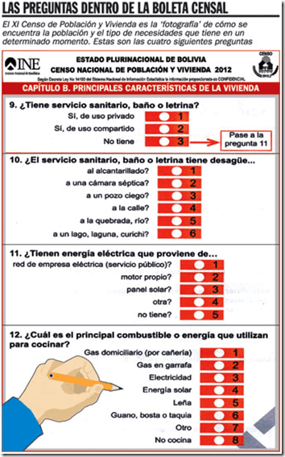
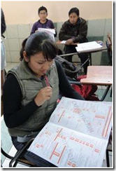

El Instituto Nacional de Estadísticas de Bolivia dice que no hay recursos económicos. INE distribuirá los mapas el lunes. Hay reclamos por límites en 4 municipios.
La cartografía llegará una semana antes del censo
El INE distribuirá los mapas el lunes. Hay reclamos por límites en cuatro municipios. A provincias la cartografía llegará una semana antes del censo.

El Instituto Nacional de Estadísticas (INE) comenzará a partir del lunes 12 de noviembre la distribución del material cartográfico que servirá de guía para el desplazamiento de los 16.000 empadronadores comprometidos para las provincias cruceñas, es decir, faltando una semana para la realización del Censo de Población y Vivienda 2012. Así lo informó Juan César Coca, coordinador departamental del censo.
En la cuenta regresiva para la realización de la consulta, surge la preocupación por la recepción del mapeo cartográfico en algunos municipios, debido a que esta herramienta permitirá identificar el modo en que los empadronadores cubrirán el área asignada y establecerá los límites a ser censados en cada comuna.
Para el presidente del Concejo Municipal de Yapacaní, Max Eliazar Barrientos, la recepción del material debe realizarse lo antes posible, debido a que los censadores deben cubrir una amplia área rural. “También pedimos que el INE nos asigne más personal, porque contamos con una persona encargada y no es suficiente”, dijo Eliazar.
Por su parte, Coca explicó que la base cartográfica se comenzará a distribuir junto con el resto del material censal a partir de la próxima semana. Anunció que para hoy se determinó una reunión para evaluar en qué municipios corresponde o no ampliar el personal de respaldo.
A los municipios de San Julián y Guarayos, que anteriormente registraron reclamos por la pertenencia de algunas comunidades indígenas, se sumó el problema de límites entre la comuna de Santa Cruz de la Sierra y Cotoca.
El concejal de Cotoca Erick Cambará explicó que el INE conformó un equipo interinstitucional que determinó censar a 12 de las comunidades como parte del municipio cotoqueño, no obstante quedan pendientes otras tres localidades; El Carmen, Nazareno y San Andrés.
La oficial mayor de Planificación de la Alcaldía capitalina, Sandra Velarde, respondió que estas zonas son unidades vecinales del muncipio de Santa Cruz de la Sierra reconocidas mediante decreto supremo en 2003 por parte del Ministerio de Planificación.
“Desde entonces hemos destinados los recursos necesarios para salud, pavimento, educación y limpieza, canalizados a través de los vecinos”, argumentó Velarde.
El responsable departamental del censo recordó que la prioridad es no dejar afuera a ninguna población. “Existe un plazo para que los municipios hagan llegar su representación al Ministerio de Autonomías y definan la competencia del territorio”, señaló Coca.
Deja poco tiempo para revisarlos
René Pereira Morató / Investigador UMSA
Es una situación que se viene dando en todo el país. Si bien al INE no le compete definir conflictos por límites territoriales, necesariamente debe distribuirlos territorialmente para definir el área de cobertura de sus trabajadores. Es por esto que correspondía tener el mapeo actualizado con mayor anticipación.
Con una semana de tiempo para recibir y análisar la cartografía, los empadronadores deberán trabajar a contra reloj para realizar los respectivos recorridos por las zonas que les corresponde cubrir.
Con tan poco tiempo encima, no queda más que aceptar la cartografía. Esperar a que, pese a las falencias, se pueda tener un censo de calidad que logre cubrir el universo de la población e identificar las necesidades.
Desde 2001 a la fecha hay muchas comunidades que se han reducido y otras nuevas que se formaron. Para como se presentan los conflictos, cabe imaginar que se identificarán muchas zonas con “código cero”, que es la denominación para las que queden pendientes después del censo.
Costas convoca a los jóvenes
El gobernador Rubén Costas reiteró la convocatoria a la población para participar del Censo de Población y Vivienda 2012, en especial a los jovenes, debido a que consideró que todavía no se siente una masiva participación por parte de este sector de la población.
Costas, que se refirió a la consulta durante la inauguración del corredor bioceánico, señaló que los jóvenes deben ser los principales involucrados en este proceso, debido a que definirá los recursos que la región recibe por concepto de distribución tributaria.
“Este instrumento permitirá hacer un gran pacto fiscal para que no haya regiones olvidadas y exista equidad en todo el país", dijo la autoridad cruceña.
GUÍA CENSAL
Material
Inicia la distribución
Según informaron autoridades del INE, en el comando conjunto número ocho de las Fuerzas Armadas se realizó ayer el proceso de distribución del material censal para los distritos tres, siete y diez de la ciudad. El trabajo continuará durante la próxima semana y se espera culmimar la distribución en los 15 distritos entre lunes o martes.
GOBERNACIÓN
Se amplía la capacitación
La Gobernación determinó la ampliación de los cursos de capacitación para los funcionarios hasta el lunes 12 de noviembre. El motivo, es darles tiempo a los registrados que quedaron rezagados para que puedan recibir la instrucción correspondiente.
UNIVERSITARIOS
La última oportunidad
Para los universitarios que se registraron y aún no reciben su capacitación, hoy, entre las 8:00 y las 12:00 y de 14:00 a 18:00, en la Facultad de Derecho se llevará adelante la última convocatoria por parte de las autoridades del INE y la Uagrm. En el mismo horario la EMI recibirá a estudiantes de colegio.
MULTAS
Para empadronadores
El Instituto Nacional de Estadísticas (INE) analiza la sanción con una multa de Bs 1.000 para multar a los empadronadores y jefes de zona que hayan sido capacitados y tengan un área censal para cubrir pero que incumplan con su responsabilidad.
INE no realizará la encuesta de control después del censo
La entidad gubernamental dice que no hay recursos económicos.
Evaluación. El coordinador nacional del censo 2012 precisó que sólo utilizará el método de análisis demográfico con un experto internacional, aún no contratado.

Una joven se capacita como empadronadora del censo.
Por falta de tiempo y recursos económicos, el Instituto Nacional de Estadística (INE) anunció que no aplicará el método “Encuesta de Cobertura Censal” para evaluar el Censo de Población y Vivienda 2012, que se realizará dentro de 11 días.
“No vamos a hacer la Encuesta de Cobertura Censal porque tiene un alto costo y como la fecha del censo fue definida para noviembre, no tenemos tiempo suficiente para eso”, manifestó ayer Augusto Soliz, coordinador nacional del censo 2012.
Organismos internacionales sugieren aplicar un método exhaustivo, preciso, oportuno y medible que evalúe la calidad del proceso censal en cualquier país. En este caso, la encuesta de cobertura censal es una investigación especializada que requiere personal totalmente independiente del censo para medir la calidad del proceso.
Ese método fue aplicado en los últimos censos de 1992 y 2001. Según el historial de los últimos censos, en 1992 se evidenció un 7,5% de omisión censal, es decir, que los empadronadores no llegaron a encuestar a la población que existía en una determinada zona, resultado considerado al límite de lo aceptable en su cobertura. En tanto que en el empadronamiento de 2001, los resultados fueron de 3,5%, una cifra considerada de exitosa.
Soliz anunció que en lugar de dicha evaluación, se realizará un “análisis demográfico”, que sería aplicado por un experto a nivel mundial, una vez sea contratado por el INE. “El análisis demográfico dirá el porcentaje de cobertura del censo. Nosotros creemos que vamos a estar por debajo del 3,5% de lo que se alcanzó en el 2001”, consideró.
No obstante, el estadista Álvaro Chirino, miembro del grupo de trabajo “La Ruta del Censo 2012”, manifestó hace unos días que el análisis demográfico es recomendado sólo en países con registros administrativos y migratorios sólidos, completos y exhaustivos, “que presumo no es el caso boliviano”.
“La escasa cultura estadística también se refleja en la baja inversión del Estado boliviano en la generación de estadísticas”, dijo, por lo que aconsejó necesario “implementar metodologías confiables de control post censal para conocer los márgenes de errores del operativo que alejen cualquier riesgo o temor de manipulación”.
El 2009, durante la V Reunión de la Conferencia Estadística de las Américas de la Comisión Económica para América Latina y el Caribe (CEA/CEPAL), para evaluar la cobertura censal, se recomendó incluir un componente de control de calidad en el Plan Censal, con su presupuesto correspondiente, la forma en cómo de la aplicará y asegurar el financiamiento del mismo.
![Loading...]()
![eju.tv]( "eju.tv")
{kind=link}
{kind=link}